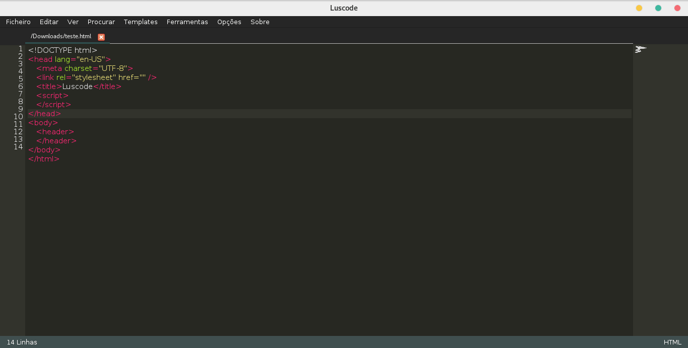

Programe em
todo o lado
Luscode é um editor de codigo/texto 100% portugês super leve feito em C++, é facil de instalar e tem uma interface muito intuitiva e percetivel, não tem muitas funcionalidades mas tem as essencias para programar em varias linguagens, como HTML, CSS, JavaScript entre outras. Esta disponivel de momento para Windows e Linux e em breve para MacOS

100% Português
adasdasdasdasdsadad
Leve
adasdasdasdasdsadad
Multi Plataformas
Funciona em sistemas Windows, Linux (Distros baseadas em Debian) e em breve MacOS, em todas as versões 32-bits e 64-bits